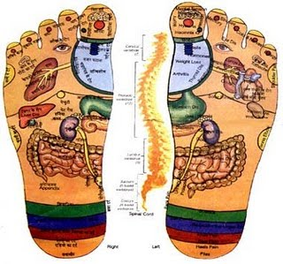

Mendeteksi Penyakit Dari Kaki

Mengandung seperempat jumlah tulang dari seluruh tubuh Anda, dan setiap kaki juga memiliki 33, 100 tendon dan otot, dan ligament, dan syarar-syaraf dan pembuluh darah yang seluruhnya mengalir ke jantung, dan otak yang tak terhitung jumlahnya.
Masalah kaki yang tidak terpecahkan dapat menimbulkan konsekuensi yang tidak diharapkan. Sakit yang tidak segera dirawat dapat mengakibatkan seseorang untuk menjadi lebih lamban dan meningkatnya berat badan, contohnya, untuk keseimbangan denggan cara yang tidak alamiah, meningkatkan resiko jatuh dan patah tulang.
Jadi ketika telapak kaki mengirimkan 18 pesan peringatan ini, pasti ada sesuatu:
Kuku kaki dengan bentuk agak sedikit masuk ke dalam, lekukan berbentuk sendok
Apa artinya:
Anemia (kekurangan zat besi) sering menunjukkan bentuk tidak alami, atau seperti sendok hingga ke pangkal kuku, terutama pada kasus sedang hingga parah.
Hal ini disebabkan oleh jumlah hemoglobin dan protein kaya zat-besi sel-sel pada darah yang mengangkut oksigen, tidak cukup. Pendarahan dalam (seperti mencret) atau menstruasi yang tidak lancar dapat memicu anemia.
Petunjuk lain:
Pada jari seperti pada kaki, kulit dan kuku muncul warna pucat. Kuku tersebut juga, dan kaki mungkin terasa dingin. Kelelahan adalah gejala utama anemia, sama dengan nafas yang pendek-pendek, merasa pusing ketika berdiri, dan sakit kepala.
Apa yang harus dilakukan:
Pengecekan jumlah sel darah merah paling sering dilakukan untuk mendiagnosa anemia. Pemeriksaan fisik bisa. Pertolongan pertama yaitu dengan mengkonsumsi suplemen zat besi dan perubahan menu diet untuk menambah zat besi dan vitamin yang mempercepat penyerapan zat besi.
Kaki atau Jari Ujung kaki yang tidak berbulu
Apa artinya:
sirkulasi yang buruk, biasanya disebabkan oleh penyakit jantung, dapat membuat rambut rontok dari kaki. Ketika jantung kehilangan kemampuan untuk memompa darah yang cukup ke tempat yang paling ujung dikarenakan asterosklerosis (biasanya sering dikenal sebagai penyumbatan arteri), tubuh harus memprioritaskan penggunaannya.
Petunjuk lain:
Berkurangnya suplai darah juga membuat sulit untuk merasakan rangsangan di kaki. (Cek pada bagian atas telapak kaki atau di dalam sendi.) Ketika Anda berdiri, kaki Anda bisa menjadi merah atau, ketika menekuk, tiba-tiba berubah menjadi merah.
Orang-orang dengan sirkulasi darah yang buruk cenderung telah tahu bahwa mereka memiliki kondisi kardiovaskular (seperti penyakit jantung atau ateri carotid) tetapi bisa saja tidak menyadari bahwa mereka memiliki masalah sirkulasi.
Apa yang harus dilakukan:
Mengobati jaringan vascular dapat meningkatkan sirkulasi. Bulu rambut jarang bisa tumbuh kembali, tetapi tak seorangpun yang terlalu mengkomplain hal itu.
Sering kram kaki atau kesemutan
Apa artinya:
Kram tiba-tiba di kaki pada dasarnya, kontraksi yang keras pada otot dapat dipicu oleh permasalahan yang berurutan seperti olahraga atau dehidrasi.
Tetapi jika itu sering muncul, diet Anda kemungkinan kurang kalsium, kalium, atau magnesium. Wanita hamil pada trimester yang ketiga khususnya sangat rentan karena peningkatan volume darah dan mengurangi sirkulasi ke kaki.
Petunjuk lain:
Kesemutan cenderung muncul secara sering ketika Anda hanya berbaring. Kesemutan bisa muncul pada sebuah otot yang tajam dan muncul secara menjalar. Rasa nyeri dapat bertahan lama setelahnya.
Yang harus dilakukan:
Cobalah untuk memijat pada area yang sakit. Anda juga bisa merelaksasikan otot dengan mengaplikasikan kain dingin atau mengusapnya dengan alkohol. Untuk mencegah kram, selonjorkan kaki sebelum tidur. Kemudian minumlah segelas susu hangat. (untuk kebutuhan kalsiumnya)
Nyeri yang tidak sembuh-sembuh pada telapak kaki
Apa artinya:
Ini adalah bukti utama gejala diabetes. Level glukosa dalam darah membahayakan rangsangan pada kaki yang artinya bahwa luka ringan atau iritasi disebabkan oleh tekanan atau sering tidak diperhatikan.
Terutama oleh seseorang yang tidak menyadari bahwa dia memiliki penyakit. Tidak langsung diobati, luka-luka ini dapat menyebabkan infeksi, bahkan amputasi.
Bukti lain:
potongan berbau tidak enak khususnya terdeteksi karena memang sudah ada sebelumnya. Gejala diabetes lain yaitu selalu merasa kehausan, sering buang air kecil, keseringan lelah, pandangan menjadi kabur, lapar yang berlebihan, dan turunnya berat badan.
Apa yang harus dilakukan: Rawat luka segera dan periksakan ke dokter untuk evaluasi diabetes. Penderita diabetes harus memperhatikan kaki mereka setiap hari (para lansia atau orang yang obesitas harus meminta orang lain untuk melakukannya) dan datanglah ke klinik kesehatan yang profesional setiap tiga bulan.
Kaki dingin
Apa artinya:
Perempuan, terutama melaporkan kaki dingin (atau lebih jelasnya, pasangan mereka komplain tentang itu). Bisa jadi itu bukan apa-apa atau itu mungkin mengindikasikan gangguan jaringan tiroid.
Perempuan berumur lebih dari 40 tahun yang memiliki kaki yang dingin sering memiliki masalah fungs pada tiroidnya, kelenjar yang mengatur suhu dan metabolisme. Sirkulasi yang buruk (pada setiap jenis kelamin) adalah penyebab lain yang mungkin terjadi.
Bukti lain:
Gejala hipotiroid sering muncul dengan gejala lain (kelelahan, depresi, naiknya berat badan, kulit yang kering).
Yang harus dilakukan:
(Coba kaos kaki wool dan sepatu kain). Jika Anda juga memiliki masalah kesehatan lain, sebutkan juga kaki dingin Anda kepada dokter. Sayangnya, berdasarkan perawatan denga pengobatan yang berhubungan dengan masalah tiroid, cenderung menjadi gejala yang tidak mudah teratasi.
Kuku yang Tebal, Kuning, dan mengarah kebawah secara aneh
Apa artinya: Infeksi jamur sedang menjalar di bawah permukaan kuku. Onychomicosis dapat mengakibatkan rasa sakit selama bertahun-tahun. Karena tidak beraksi secara kasat mata, infeksinya semakin meningkat dan dapat menyebar ke seluruh kuku bahkan hingga ke jari kuku.
Petunjuk lain:
Kuku juga berbau kemudian berubah menjadi kehitaman. Masyarakt harus menyadari hal ini; para penderita diabetes gangguan sirkulasi, atau kelainan berkurangnya system imun (seperti rematik kritis).
Jika seorang lansia mengalami kesulitan berjalan, kadang-kadang masalahnya dapat ditelusur dengan fakta sederhana bahwa kuku yang terinfeksi menjadi lebih tebal, akan sangat sulit dipotong dan mengabaikan pusat sakit.
Apa yang harus dilakukan:
Periksakan ke spesialis kaki atau ahli perawatan. Pada kasus yang serius, penggunaan obat anti jamur tidak selalu efektif seprti kombinasi antara pengobatan luar dan yang diminum dan pemotongan untuk membuang penyakit secara professional.
Jari Kaki yang Tiba-Tiba Membesar dan Terlihat Menakutkan
Apa artinya:
Kemungkinan encok. Ya, penyakit jadul (jaman dulu) ini masih ada dimana-mana dan Anda tidak harus berumur lebih dari 65 tahun untuk mengalamaninya.
Encok merupakan sakit sejenis arthritis yang biasanya disebabkan oleh terlalu banyak asam urin, substansi alami.
Asam urin yang berlebihan membentuk Kristal yang seperti jarum, terutama pada temperature yang sangat rendah. Pada bagian yang terdingin, yang merupakan bagian terjauh dari jantung, menjadi bengkak.
“Hampir 75% Anda terbangun dengan jari kaki yang membengkak yang merupakan gejala pertama sakit encok,” Andersen, seorang podriatis, mengungkapkan.
Petunjuk lain:
Kulit yang merah membangkak dan berwarna keunguan dengan rasa panas dan nyeri juga dapat muncul pada instp, tendon Achilles, lutut, dan paha.
Setiap orang dapat terkena encok, meskipun laki-laki yang berumur 40 dan 50-an yang paling mungkin. Wanita yang mengalami encok biasanya terjadi pasca menstruasi.
Yang harus dilakukan:
Periksakan ke dokter untuk mengontrol penyebab encok dengan menggunakan menu diet atau pengobatan. Ahli penyakit kaki dapat mengobati rasa sakit dan mempertahankan fungsi kaki.
Rasa Kaku di kedua kaki
Apa artinya:
Tidak mampu untuk merasakan kaki Anda atau merasakan sensasi tekanan berat seperti menginjak paku merupakan tanda utama terganggunya system syaraf peripheral.
Terganggunya system syaraf peripheral memiliki beberapa penyebab tapi yang paling sering adalah diabetes dan kecanduan alcohol. Kemoterapi adalah penyebab umum lain.
Petunjuk lain:
Rasa terbakar dapat juga muncul pada tangan dan secara bertahap menyebar ke lengan hingga kaki. Rasanya seperti Anda mengenakan sarung tangan atau kaos kaki yang sangat berat.
Yang harus dilakukan:
Periksakan ke dokter untuk menentukan penyebabnya (terutama jika bukan karena kecanduan alkohol). Belum ada pengobatan untuk gangguan system saraf peripheral, tetapi ada obat untuk mengurangi rasa sakit hingga anti depresan.
Nyeri di Sendi Jari Kaki
Apa artinya:
Rheumatoid arthritis (RA), penyakit melemahnya fungsi sendi, sering dirasakan pertama kali pada sendi-sendi yang lebih kecil, seperti jari kaki dan lekukan jari tangan.
Petunjuk lain:
Rasa kaku dan bengkak biasanya muncul bersamaan ketika merasa sakit. Sakit ini cendirung simetris, contohnya, sakit ini terjadi secara simultan di kedua jempol kaki atau jari kaki lainnya.
RA berkembang lebih cepat daripada jenis penyakit arthritis lainnya, dan bisa datang dan pergi. Wanita terkena dampak empat kali lebih besar dari laki-laki.
Yang harus dilakukan:
harus dilakukan pemeriksaan secara penuh untuk menentukan penyebab nyeri sendi. Untuk RA, ada beberapa pengobatan dan terapi yang dapat menimalisir rasa sakit, dengan diagnose sejak dini, resiko cacat secara permanen dapat dihindari.
Kuku Kaki Seperti Berlubang
Apa artinya:
hampir separo penderita psoriaris, penyakit kulit juga muncul pada kuku dengan ciri banyak lubang-lubang kecil, yang tipis atau dalam. Lebih dari 75% penderita psoriatic arthritis, kelainan yang berkaitan dengan sendi dan kulit juga memiliki lubang-lubang dalam kuku ini.
Petunjuk lain:
Kuku, baik kaki maupun tangan akan menebal. Kuku-kuku tersebut akan berubah warna menjadi kuning kecoklatan atau berwarna seperti ikan salmon. Buku jari yang terdekat dengan kuku juga cenderung kering, merah, dan meradang.
Yang harus dilakukan:
lakukan pengobatan yang variatif untuk psosiaris dan pasosiaric arthtritis dan mengembalikan kondisi buku jari kaki, terutama jika perawatan telah dilakukan sejak dini.
Tidak Bisa/Kesulitan Mengangkat Kaki ke Atas
Apa artinya:
Gangguan pada otot dan syaraf bisa berasal dari kaki Anda. Obat kemoterapi tertentu dapat juga mengakibatkan kesulitan mengangkat kaki bagian depan ketika berdiri maupun berjalan.
Petunjuk lain:
Ada kemungkinan sakit dan terasa kaku. kadang-kadang rasa sakit ini dirasakan pada kaki bagian depan atau tulang belakang bagian bawah, dimana syaraf (karena kelainan atau tumor).
Pada beberapa kasus, kaki. Hal ini jarang terjadi pada kedua kaki.
Yang harus dilakukan:
Periksakan ke dokter, karena gangguan ini bisa permanen, tergantung pada penyebab dan perawatannya.
Kulit Kering
Apa artinya:
Jika wajah atau tangan terasa kering jangan abaikan kondisi kulit ini pada bagian telapak kaki Anda. Infeksi jamur biasanya dimulai pada kulit kaki yang kering dan gatal kemudian menjalar hingga rasa terbakar dan muncul bentolan-bentolan. Ketika bentolan itu pecah, infeksi akan menyebar.
Petunjuk lain:
Infeksi jamur/kutu air ini biasanya muncul diantara sela jari kaki. Kemudian bisa menyebar ke bagian tubuh lain, seperti ketiak, biasanya penularan terjadi ketika menggaruk.
Apa yang harus dilakukan:
Kasus sederhana biasa diatasi dengan membasuh kaki sesering mungkin dan keringkan secara menyeluruh. Kemudian pastikan kaki tetap kering, termasuk mengunakan bedak kaki pada sepatu dan kaos kaki.
Jika tidak ada peningkatan dalam dua minggu dan infeksi semakin parah, dokter akan memberikan resep pengobatan antijamur baik obat luar maupun dalam.
Perubahan Warna Kaki secara Ekstrim
Apa artinya:
Pada suhu dingin, penyakit Raynaud menyebabkan perubahan warna kaki secara ektrim, dari putih kemudian berubah menjadi biru, dan pada akhirnya berubah menjadi merah sebelum kembali ke warna semula.
Untuk alasan yang masih belum jelas, pembuluh darah mengalami over reaksi yang menyebabkan perubahan warna pada kaki.
Petunjuk lain:
Ada area lain yang terinfeksi seperti jari, hidung, bibir dan daun telinga. Bagian kulit yang terkena akan terasa kaku. Wanita dan orang-orang yang tinggal di daerah dingin lebih sering terkena penyakit Raynaud tersebut. Biasanya muncul pada usia sekitar 25 hingga 40 tahun.
Yang harus dilakukan:
Periksakan ke dokter tentang pengobatan yang dapat melebarkan pembuluh darah, yang akan mengurangi infeksi kemungkinan yang lebih parah.
Telapak Kaki Terasa Amat Sakit untuk Berjalan
Apa artinya:
faktor stress yang tidak terdiagnosa umum menyebabkan nyeri pada kaki. Rasa sakit ini dapat dirasakan pada seluruh bagian telapak kaki.
Faktor ini sering muncul secara berulang-ulang dapat disebabkan oleh masalah lain seringnya osteopenia (kurangnya kepadatan tulang terutama yang terjadi pada perempuan yang berumur lebih dari 50 tahun atau kasus malnutrisi lainnya, termasuk kekurangan vitamin D, masalah penyerapan kalsium, atau anoreksia.
Petunjuk lain:
Anda masih bisa berjalan ketika kaki patah, hanya terasa sakit.
Apa yang harus dilakukan:
Periksakan ke dokter tentang semua sakit yang dirasakan.
Jempol Kaki Mencuat
Apa artinya:
Ketika bentuk jempol kaki mencuat ke arah yang tidak semestinya, itu tandanya ada masalah paru-paru, termasuk fibrosis dan kanker paru-paru. Penyakit jantung dan gangguan pada perut juga bisa terjadi.
Petunjuk lain:
Jari kaki lainnya juga terihat mencuat, dan terjadi pada beberapa jari saja, atau bahkan seluruhnya.
Yang harus dilakukan:
Perawatan bergantung pada penyebab, jadi laporkan gejala serius ini kepada dokter.
Rasa Sakit yang Menusuk pada Tumit
Apa artinya:
Plantar fasciitis nama umum untuk rasa terbakar pada jaringan ikat yang menjalar pada kaki penegangan yang abnormal pada jaringan ikat.
Petunjuk Lain:
Rasa sakit muncul ketika Anda menapakkan kaki di pagi hari dan sering meningkat ketika Anda memakai alas kaki. Lari dan melompat terlalu sering dapat menyebabkan rasa sakit ini.
Anda akan berada dalam bahaya jika Anda hanya berjalan dengan kaki telanjang pada permukaan jalan yang keras.
Yang harus dilakukan:
Jika rasa sakit munul lebih dari beberapa minggu dan terasa semakin buruk, bawalah ke ahli podiatri. Pastikan untuk meminta saran dalam menggunakan alas kaki yang tepat selama perawatan.
Bau Kaki
Apa artinya:
Kaki yang bau cenderung memberikan alarm yang lebih banyak dibanding gejala lain. Kaki biasanya lebih berkeringat dibanding bagian tubuh lain. Penggunaan sepatu dan kaos kaki yang melembabkan kaki, membuat kaki bau.
Yang harus dilakukan:
Cuci dengan sabun antibakteri dan keringkan dengan sempurna. Usap anti perspirant pada telapak kaki. Seringlah menggunakan alas kaki yang terbuat dari bahan alami, seperti kulit dan kain. Buka tali sepatu dan keringkan. Itu saja.
Sepatu Tua
Berbahaya! Anda sedang menjalankan bom kesehatan jika sepatu setiap hari anda sudah lebih dari 2 tahun atau jika sepatu berjalan atau berlari anda sudah digunakan lebih dari 350-500 mil.
Sepatu tua kurang mendukung kebutuhan kaki – dan alas kaki lebih cepat habis dibandingkan dengan yang dikira kebanyakan orang, kata para spesialis kaki.
Petunjuk lainnya:
adalah melepuh (terlalu ketat), bengkak pada ibu jari (terlalu sempit), sakit pada tumit (tidak cukup penyangga) – jika Anda memiliki masalah kaki seperti ini, setidaknya ada kemungkinan 50-50 alas kaki anda buruk atau tidak pas.
Orang-orang yang lebih tua khususnya lebih rentan karena mereka memiliki kebiasaan sudah terbiasa mengenakan sepatu tua yang mungkin kurang penyangga, fleksibilitas atau kurang memiliki daya lekat atau cengkram yang bagus.